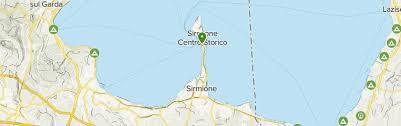

ABOUT

Sirmione est une ville sur une étroite péninsule à l'extrémité sud du Lac de Garde,
dans un endroit pittoresque qui a attiré les visiteurs depuis l’époque romaine. La péninsule ne fait que 100 mètres
de large et près de quatre kilomètres de long.
La région esthabitée depuis l'âge de pierre, lorsqu'elle était surement peuplée de pêcheurs
qui vivaient dans des maisons sur pilotis sur les berges du lac.
Accueil